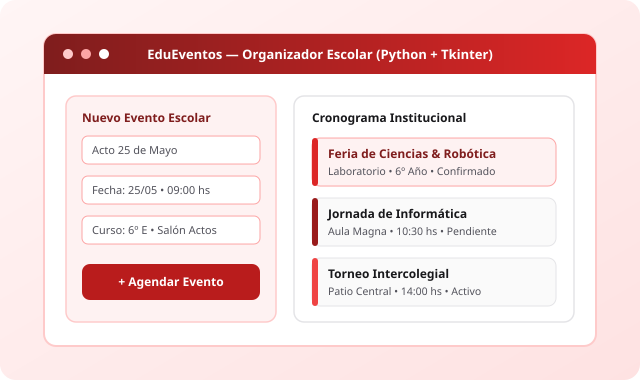

Software EscolarEduEventos — Organizador de Eventos Escolares
- Problema
- La organización de actos, ferias y actividades del colegio dependía de avisos dispersos, generando superposición de fechas y falta de claridad sobre horarios o espacios.
- Solución
- Desarrollamos en equipo una aplicación de escritorio con interfaz gráfica en Python y Tkinter para cargar, listar y administrar eventos escolares de forma ordenada.
- Participación
- Colaboré en la definición de la estructura de datos de cada evento, pruebas de carga de información, validación visual de formularios y verificación de usabilidad.
- Tecnologías
- Python 3, librería gráfica Tkinter, diseño modular de ventanas y manejo de formularios.
- Evidencia
- Aprendizaje
- Comprendí cómo transformar una necesidad real del colegio en una aplicación visual clara y la importancia de probar cada botón y flujo antes de entregar.